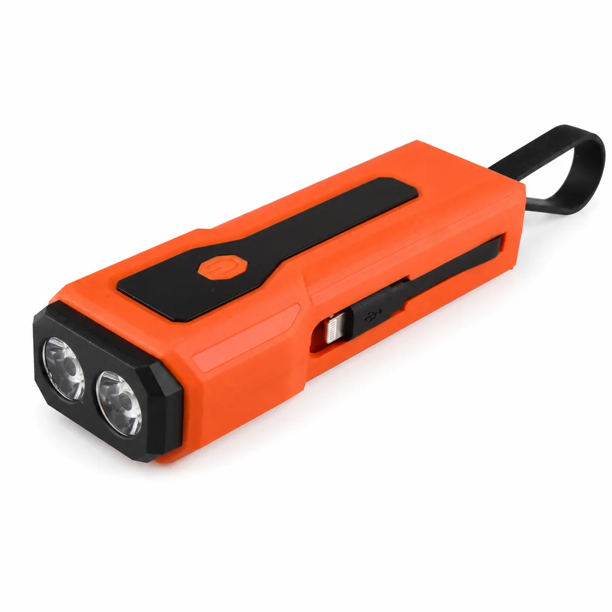
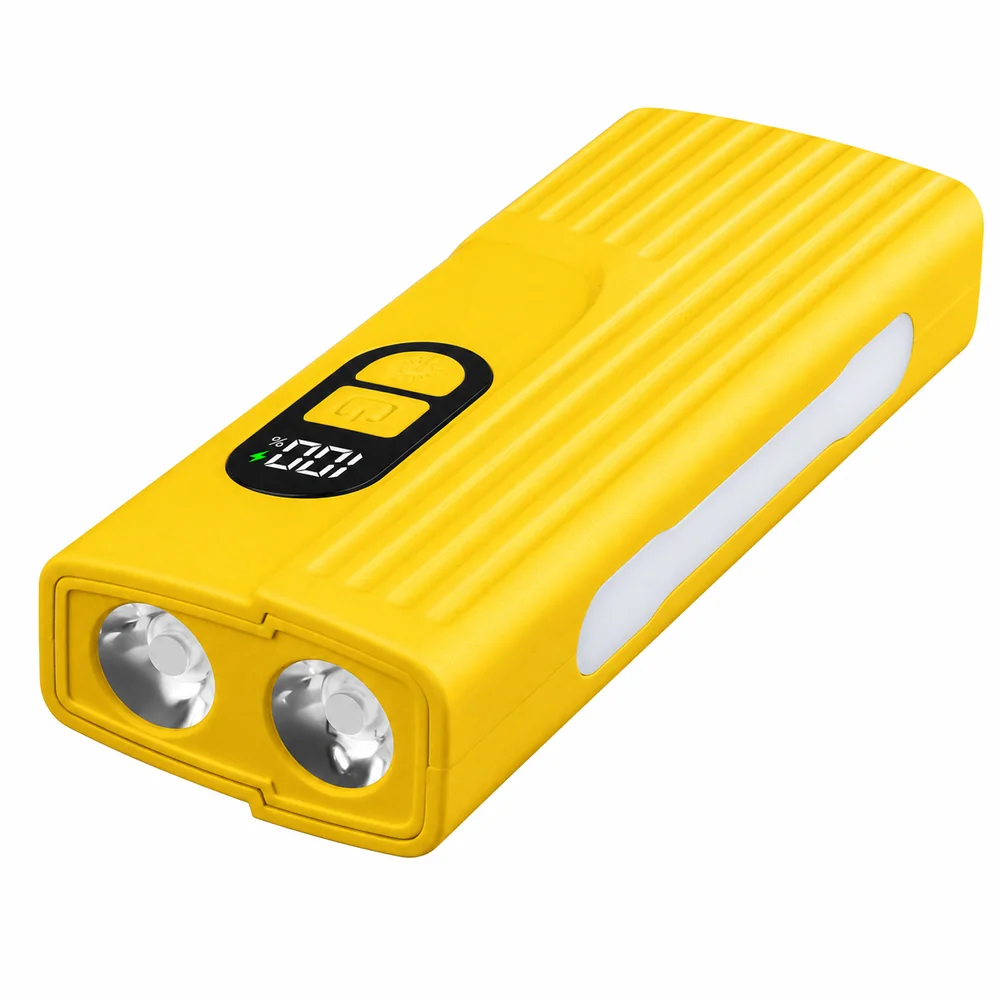
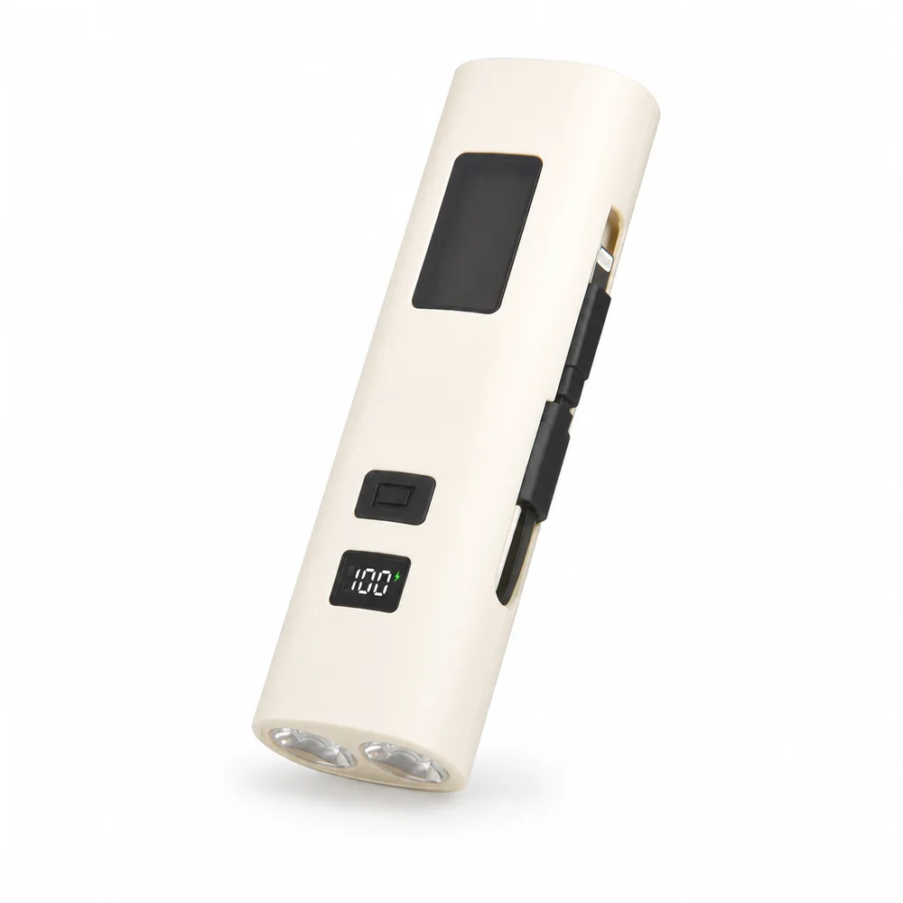

Buyer Fit
For safety buyers who need more than warning lights.
Importers often start with road flares, magnetic beacons and triangle warning lights, then add rechargeable work lights for repair, vehicle backup and emergency retail kits.
Rechargeable Work Light Supplier
HENGBO keeps LED warning lights as the core line, while Z-series rechargeable power-bank work lights help buyers extend into vehicle backup, outdoor repair and emergency kit programs.


Buyer Fit
Importers often start with road flares, magnetic beacons and triangle warning lights, then add rechargeable work lights for repair, vehicle backup and emergency retail kits.
Recommended Models
Main Line Reminder
These work lights are positioned as supporting products, so overseas buyers can build a fuller safety catalog without weakening the core warning light message.
OEM / ODM
Send model, quantity, market, color preference and packaging plan. We can prepare a mixed quotation with warning lights and work lights together.

Z-818Compact 18650 work light with USB output, battery display and emergency charging use.
Z-82821700 battery platform, side work light and power-bank function for outdoor programs.
Z-838High-visibility shell with USB output and portable lighting for emergency kits.
Procurement Support
Send target market, quantity and packaging needs. HENGBO can recommend warning lights first, then match headlamps or work lights as add-on products.
Buyer Questions
Yes. They can be quoted as add-on products with road warning lights, magnetic beacons and emergency kit items.
Yes. Power-bank work lights can support vehicle backup, outdoor emergency and repair lighting kits.
Send target models, quantity, market, packaging needs and whether you want a mixed warning light quotation.